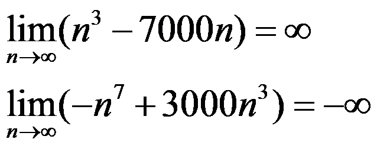
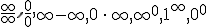
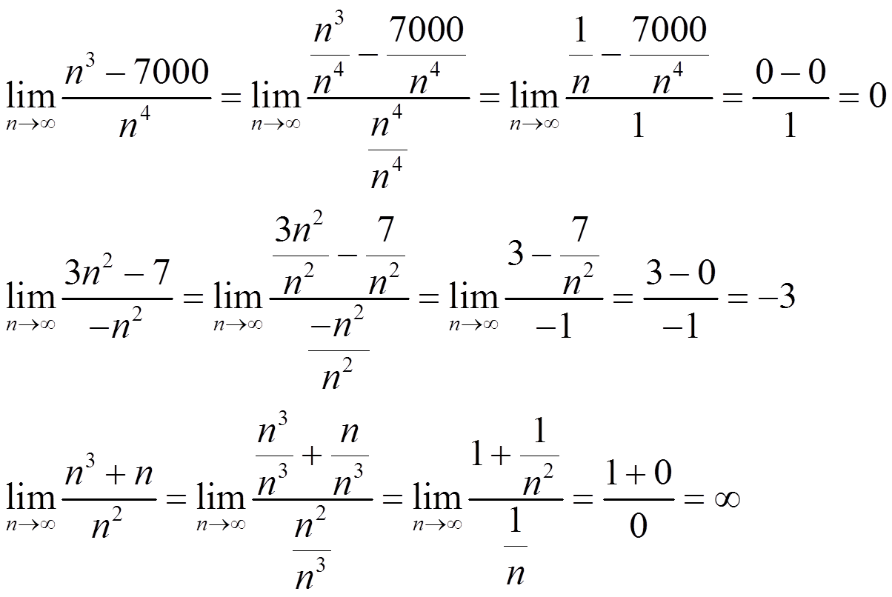
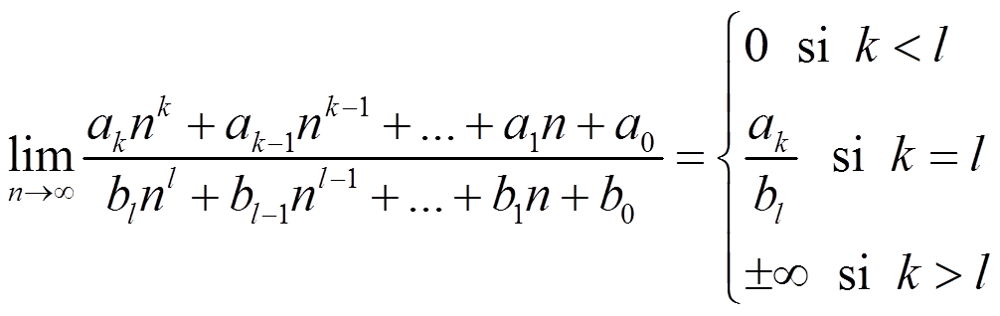
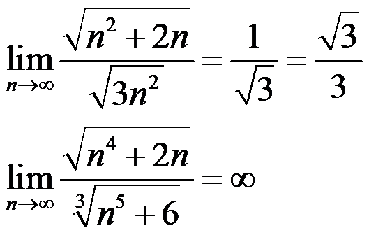
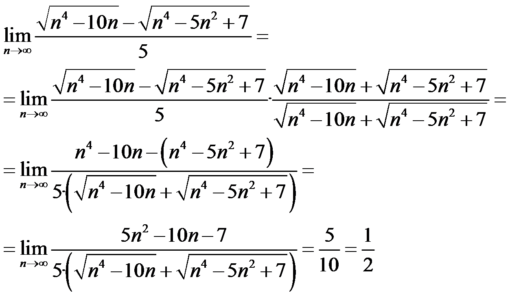
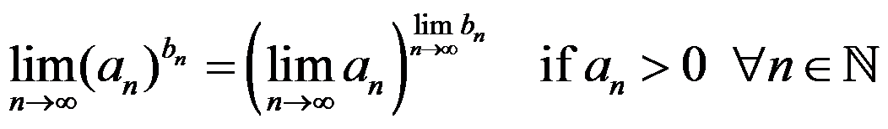
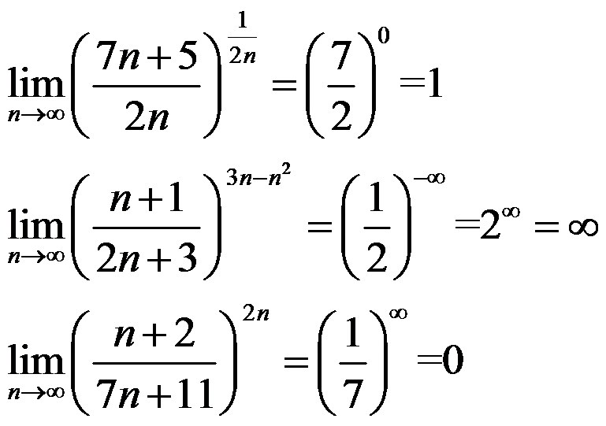
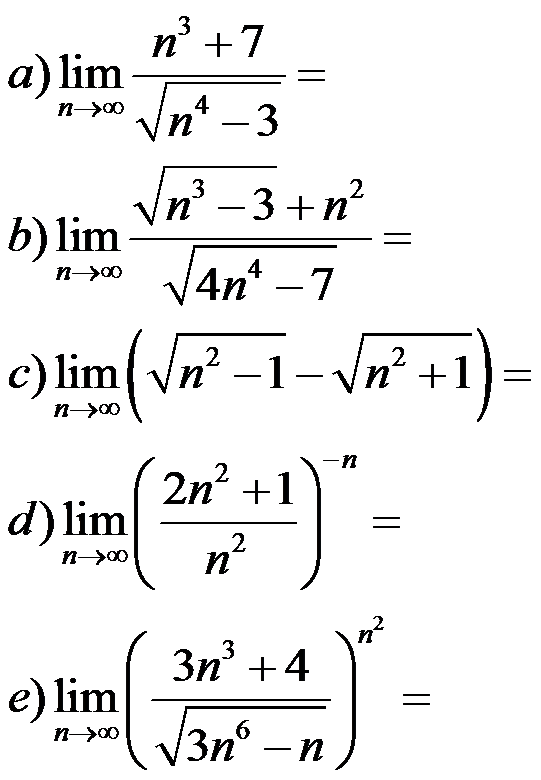

Límites y continuidad
cálculo de límites
Las sucesiones polinómicas siempre divergen a ±∞, dependiendo del signo del coeficiente del término de mayor grado:

Las indeterminaciones son límites que son diferentes dependiendo de cada situación. Son:

Las sucesiones racionales siempre son indeterminaciones, que se resuelven dividiendo todo por el grado más alto:

NOTA. Como has comprobado:

Si tenemos sucesiones irracionales, tenemos que hacer la raíz del límite. Siempre divergen si existe. Si son racionales miramos los grados:

Podemos encontrar indeterminaciones en la resta de raíces, entonces usamos su conjugado para resolverlas:

Si hay potencias, usamos las propiedades:

Ejemplos:

Ejercicio. Calcula:

Soluciones: a) ∞; b) 1/2; c) 0; d) 0; e) ∞
Obra publicada con Licencia Creative Commons Reconocimiento No comercial Compartir igual 4.0